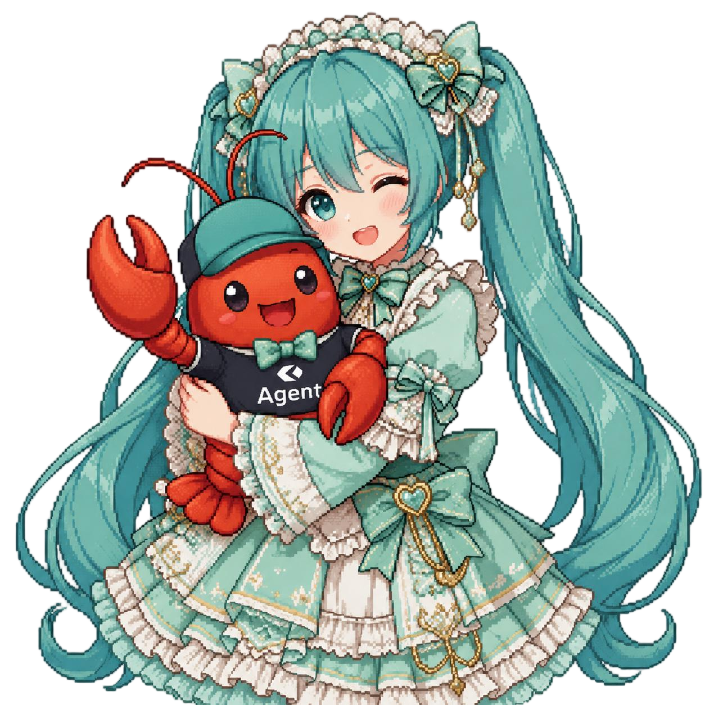

AI 工程：
从零开始
503 节课，20 个阶段。从数学、模型、tokenizer、attention 到智能体循环，先手写原理，再理解框架。
中文 fork 的本地阅读入口，课程、目录和进度都在站内完成。

学习方式
很多 AI 材料是碎片化的：一篇论文、一篇微调教程、一个智能体演示，彼此之间很难连成能力路径。你可能能上线一个聊天机器人，却说不清 loss 曲线；能给智能体接工具，却不知道调用工具的模型内部 attention 正在做什么。
这套课程把路径串起来：20 个阶段、503 节课，覆盖 Python、TypeScript、Rust、Julia。从线性代数到自主系统，每个核心算法先从原始数学写一遍。反向传播、tokenizer、attention、智能体循环，框架出现时你已经知道它替你算了什么。
每节课都遵循同一个节奏：读问题、推公式、写代码、跑测试、留下可复用产物。这个站点负责把中文课程入口、目录、进度和课程页聚在本地浏览体验里。
课程进度
已完成课程
0 / 0
阶段
0 / 0
语言
4
术语条目
···
课程目录 · 20 个阶段 · 503 节课
打开一个阶段查看课程。每节课都对应文档、代码、测试和可复用产物。
已完成
进行中
计划中
说明
这是面向中文学习者整理的本地阅读站。首页、目录、路线图、术语表和课程页优先跳转到站内页面；原始英文仓库只在首屏按钮中保留一个明确入口。